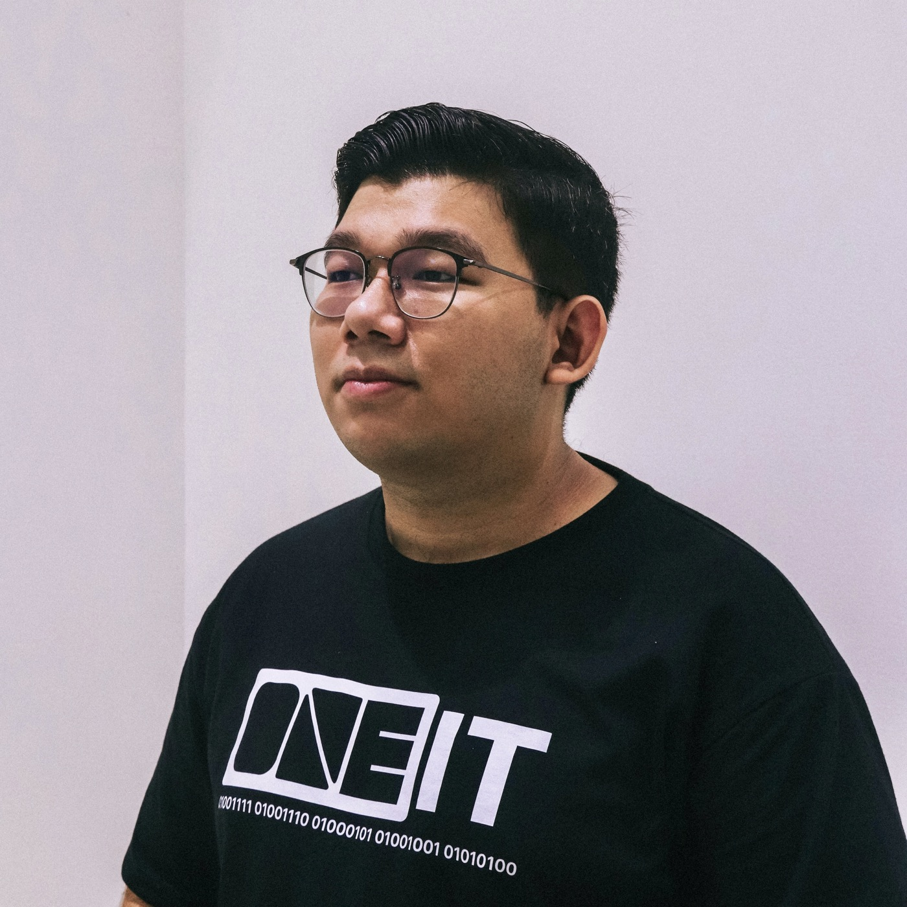

Kendrick Thiha
Cybersecurity MSc Student · Platform Operator
My background is in IT operations, with hands-on experience in Microsoft 365 administration, identity and access management, and endpoint security. I’ve supported users, helped with infrastructure migrations, and investigated technical and security issues. That experience shapes my interest in cybersecurity: understanding how systems are used, where risks arise, and how to address them in practice.
I’m pursuing an MSc in Cybersecurity and Information Assurance at Mahidol University, with projects in fraud analysis, digital forensics, and cloud vulnerability prioritization. Alongside my studies, I co-run TokenToAPI, where I handle security patches, incident investigation, authentication improvements, platform maintenance, and releases for the platform and its desktop companion, Connect.

Projects(09)
01TokenToAPIAI API gatewayTeam project
TokenToAPI is a team-operated AI API platform for accessing models, managing API keys, and reviewing usage. My role combines platform operations with development and ongoing maintenance.
My Contribution
I co-founded the platform and work on Linux server operations, deployments, API configuration, and troubleshooting across the frontend, backend, and infrastructure. I also develop payment integrations, including checkout, webhook validation, reconciliation, and refund handling.
Day-to-day work includes security patches, incident investigation, authentication controls, release management, and social media and marketing.
02TokenToAPI ConnectDesktop companionTeam project
TokenToAPI Connect is a desktop application for configuring AI clients on macOS and Windows. It discovers models from a gateway and helps users select models and apply their configuration.
Development and Maintenance
I develop and maintain the app using React, TypeScript, Rust, and Tauri. Configuration backups, atomic file updates, and restore workflows help preserve existing settings when users change their setup.
I also work on releases and signed in-app updates. Platform imports use short-lived, single-use codes to keep permanent API keys out of URLs. The configuration engine is derived from CC Switch.
03Aster Fraud AnalysisData science & investigationAcademic project
Aster is an academic expense-fraud analysis project using a fictitious company and synthetic records. It examines how rules, statistics, and machine learning can help identify claims that need further review.
Analysis Approach
The workflow validates and reconciles source records before analysis, keeping invalid records in quarantine. It combines rule-based checks with logistic regression and Random Forest, then uses association mining and graph analysis to explore relationships.
Chronological data splits separate training, validation, and evaluation. The analysis considers false alarms and missed cases as well as detections. Results are investigative leads within a simulated case. The public repository documents the analysis workflow.
04Cloud Vulnerability PrioritizationRisk-based analysisAcademic / research
This academic project examined how to prioritize network-exploitable vulnerabilities in cloud-hosted systems, where vulnerability scores need to be considered alongside the environment in which a system runs.
Project Scope
I applied data science methods to analyze and rank vulnerabilities, combining CVE and CVSS information with cloud-context risk factors. The aim was to produce a prioritization model that could help direct attention to relevant risks.
The work brought together vulnerability assessment, cloud security, and data analysis in an academic setting.
05Samsung Tracking Tag ForensicsDigital investigationAcademic project
This academic digital forensics project investigated a Samsung tracking tag application and the data trails associated with its use.
Investigation Approach
I extracted artifacts and analyzed the available data using digital forensic methods and tools. The work focused on examining application evidence and interpreting the traces found during the investigation.
The project provided practice in artifact analysis and the use of forensic methods to examine application data.
06OWASP Top 10 Web 2025Secure D Global · Web Application SecurityPersonal project
I participated in OWASP Top 10 Web 2025 through Secure D Global. The activity provided a structured setting to practice investigating common web application vulnerabilities.
Practical Work
I worked through SQL injection, cross-site scripting, broken access control, and insecure configuration scenarios in a controlled environment. The exercises connected security concepts with hands-on investigation of vulnerable applications.
The activity formed part of my practical learning in web application security.
07Small Business NetworkNetwork design & configurationAcademic project
An academic network design project for a small company, built and configured in Cisco Packet Tracer.
Design and Configuration
I designed the network topology and configured routing, switching, VLAN segmentation, and basic firewall rules. The work covered how these components fit together to provide connectivity and separate parts of a network.
The network was implemented as a simulation for coursework.
08Hotel Booking SystemFull-stack applicationAcademic project
An academic full-stack hotel reservation application, covering the connection between room availability and guest booking workflows.
Application Scope
I developed room availability management, booking workflows, and a user-facing interface. The project involved connecting the application’s interface with the underlying reservation functionality.
The work provided practical experience in building a web application around a defined booking process.
09Ski Rental ExperienceHuman-computer interactionAcademic project
An academic interface-design project for a ski rental system, applying human-computer interaction principles to a rental workflow.
Design Process
I developed interface prototypes and used usability evaluation to inform revisions. The work focused on making the rental interface easier to understand and use through iterative design.
The project centered on interface design and evaluation rather than a production rental service.
Select a project to take a closer look.
Experience
TokenToAPICo-founder & Platform Operator · Self-employed
I co-run TokenToAPI and maintain its day-to-day operation, including Linux deployments, model access, API keys, and usage tracking. I investigate faults across the frontend, backend, and infrastructure, and handle security patches, incident investigation, and authentication improvements.
I also develop payment integrations, test checkout and webhook validation, and work on reconciliation and refund handling. Alongside the platform, I develop and release TokenToAPI Connect for macOS and Windows, maintain release workflows and multilingual interfaces, and contribute to social media and marketing.
CE Global Pte LtdE-Commerce Specialist · Remote
I supported e-commerce operations within a remote team working across multiple time zones. My work included maintaining accurate platform and back-end data, investigating operational issues, and helping keep day-to-day processes running consistently.
I also coordinated logistics and supplier relationships across international markets. The role involved regular cross-cultural communication, careful follow-up, and working independently with distributed colleagues.
City Holdings LimitedInformation Technology Coordinator
I supported users with hardware, software, network, and security incidents, handled escalations, and maintained service records. I administered Exchange Online, SharePoint, Teams, and Entra ID, including accounts, licensing, access permissions, conditional access, and MFA.
My responsibilities also covered device procurement, setup, patching, encryption, and retirement. I supported tenant-to-tenant migration, Forest Trust configuration, and Azure AD Connect deployment, and assisted with endpoint alerts and phishing investigations.
I maintained technical runbooks and onboarding checklists, helped streamline account and asset workflows, and delivered staff training.
KMD Group of CompaniesInternship Trainee
During this internship, I provided first- and second-line support for computers and servers in the IT service centre. I helped diagnose hardware and software problems and supported asset procurement processes.
The work gave me practical experience in troubleshooting, communicating progress to customers, and following up on support requests.
Education
Level 4 Diploma in Computing
Credentials
- ITIL 4 Foundation
- ISC² Certified in Cybersecurity
- Microsoft 365 Fundamentals · MS-900
- Microsoft Azure Fundamentals · AZ-900
- OCI AI Foundations Associate
- OCI Foundations Associate
- Career Essentials in System Administration
- Career Essentials in Generative AI